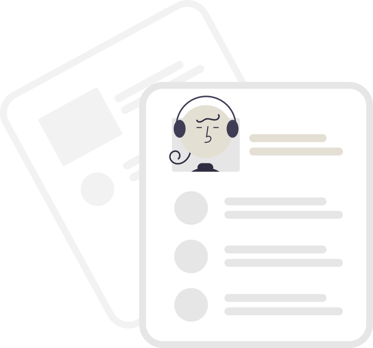

Quem somos
Somos a Adota gato, uma plataforma web que auxilia na doação de gatos. Nossa missão é ligar de maneira simplificada as pessoas que querem adotar com ONG's, protetores e parceiros, desta maneira proporcionar um lar para estas coisas fofas e peludinhas.
Como funciona o processo de adoção?
-
1º Encontre o gatinho que mais se assemelha a você, tudo isso online aqui por esta plataforma.
-

2º Será necessário o preenchimento do formulário de adoção, assumindo a responsabilidade pelo seu futuro pet. Neste formulário serão exigidos alguns tópicos como:
- Recurso financeiro para manter a saúde do seu gatinho (vacina, comida e etc...);
- Telas na janelas, para evitar que aquele gatinho danado tente fugir;
- Tempo disponível para interagir com aquela bolinha de pelo.
-
3º O parceiro do Adota gato, irá avaliar se você está apto a ter um gatinho. Nesta fase será realizada uma validação do seu checklist e principalemnte uma entrevista presencial na casa do pretendente.
-
4º Esta é a fase mais gostosa. Após alguns dias você receberá sua bolotinha peluda em casa. Aproveite e brinque muito com ele e seja muito feliz.
Seja um apoiador
Ajude a Apoia gato e seus parceiros a manter este fofinhos saudáveis até a adoção, faça uma doação e mantenha este projeto mais fortalecido.